Disseny de Nivell
Clixés
Concepte
El concepte de "clichés" en els videojocs es refereix a elements, situacions, mecàniques o trames que s'han tornat comuns i previsibles a causa de la seva repetida aparició en diversos jocs. Aquests "clichés", al ser utilitzats amb freqüència, poden generar una sensació de manca d'originalitat o sorpresa en l'experiència del jugador. La presència de "clichés" en els videojocs pot conduir a la percepció que certs aspectes del joc són genèrics o derivats. La innovació i la creativitat en el disseny de jocs sovint busquen desafiar o subvertir aquests "clichés" per oferir experiències més úniques i memorables.
Exemples
-
Missió de Rescat de la Princesa:
Exemple: Super Mario Bros. - Mario ha de rescatar la Princesa Peach de les urpes de Bowser.
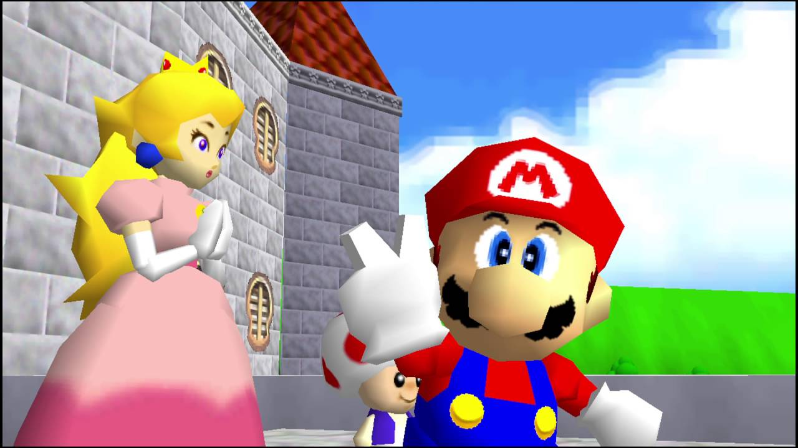 -
Cap de Final en la Torre:
Exemple: The Legend of Zelda: Ocarina of Time - Ganondorf com a cap de final en la torre de Ganon.

-
Caixes Rompibles per Recollir Ítems:
Exemple: Crash Bandicoot - Trencar caixes per obtenir fruites i vides.
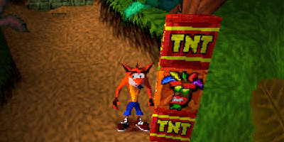 -
Mascotes com Acompanyants:
Exemple: Fable II - El gos acompanyant que segueix al jugador i reacciona a les seves eleccions.
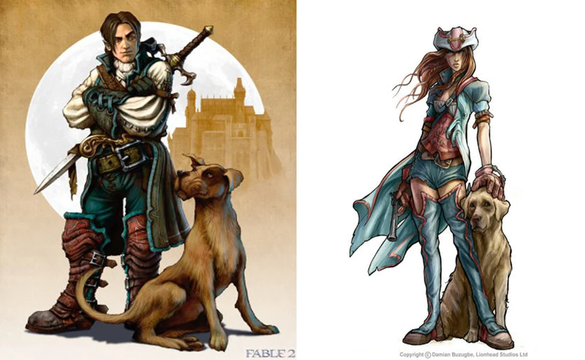 -
Cap de Final en Tres Fases:
Exemple: Final Fantasy VII - La batalla final contra Sephiroth en diverses fases.
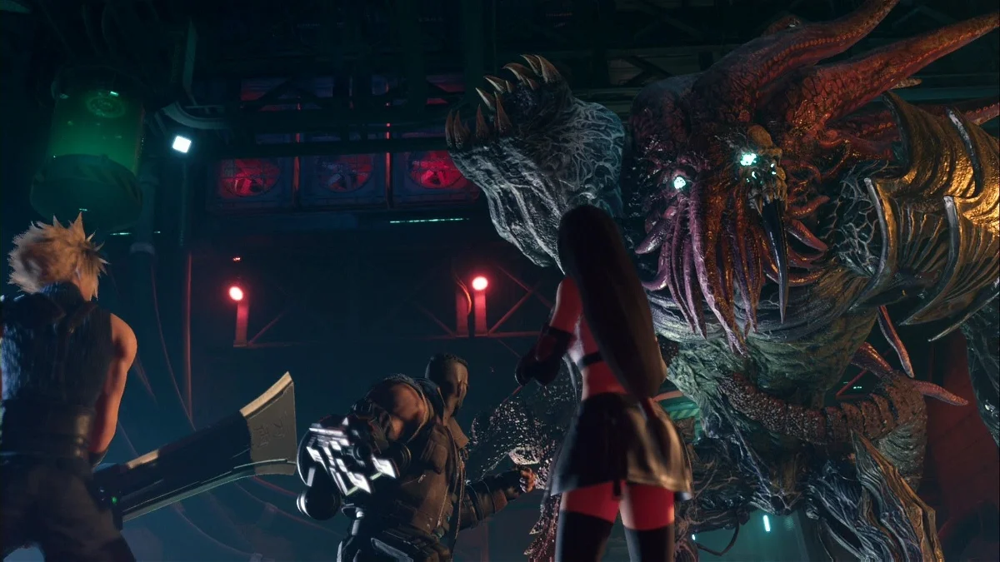 -
Laberints en Jocs de Rol:
Exemple: The Legend of Zelda - La sèrie sovint presenta masmorres amb dissenys laberíntics.
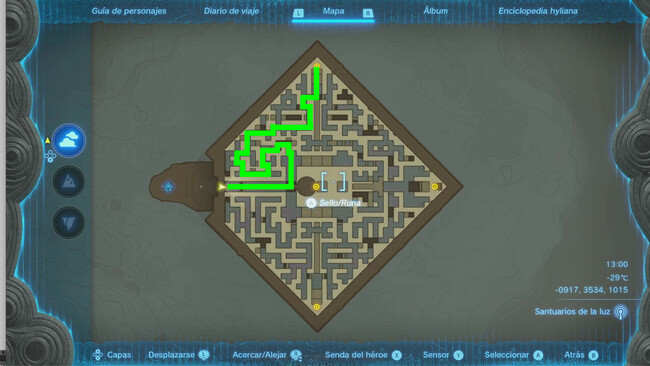 -
Jugador Amnèsic a l'Inici:
Exemple: The Dark Descent - El protagonista comença el joc sense recordar el seu passat.
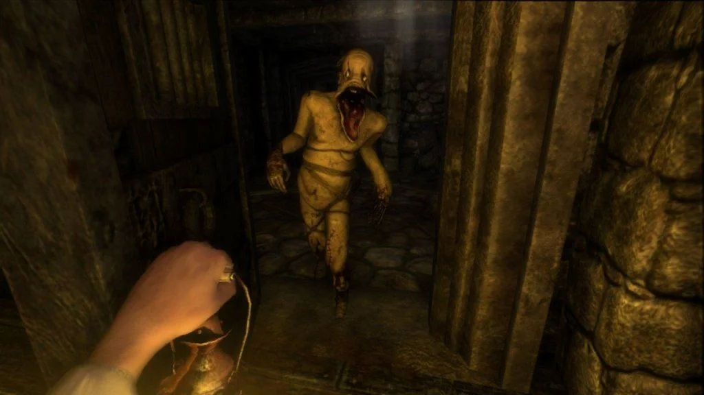
Objectius i Condicionants
Els objectius i condicionants en els videojocs són aspectes fonamentals que influeixen en la seva jugabilitat i en la forma en què els jugadors experimenten aquesta forma de entreteniment interactiu.
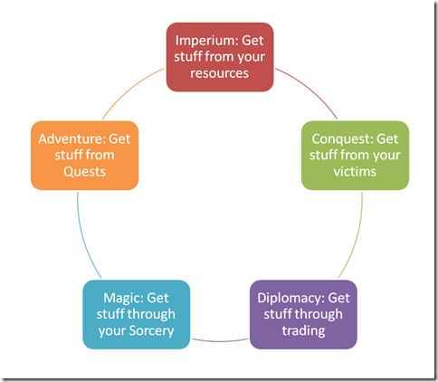Objectius
-
Narratiu:
Molts videojocs tenen una història o narrativa que estableix objectius específics per als jugadors. Aquests objectius poden implicar completar missions, resoldre enigmes o superar reptes específics per avançar en la trama.
-
Gameplay:
L'objectiu pot ser millorar les habilitats del jugador a través de l'experiència, ja sigui mitjançant el sistema de nivells, la recollida d'objectes o l'aprenentatge de noves habilitats.
-
Competitiu:
En jocs competitius, l'objectiu principal és sovint guanyar contra altres jugadors o equips, ja sigui mitjançant punts, eliminacions o altres criteris específics.
Condicionants
-
Limitacions Tècniques:
Les limitacions de maquinari i software poden afectar els objectius del joc. Això pot incloure restriccions de gràfics, límits de memòria o altres restriccions tècniques que afecten el disseny i l'execució del joc.
-
Temporalitat:
Els videojocs poden estar subjectes a condicions temporals, com ara la duració de la partida o la disponibilitat de certes característiques en un moment determinat.
-
Econòmiques:
Les restriccions financeres poden influir en els objectius i el desenvolupament del joc. Jocs amb pressupostos més petits poden tenir objectius més modestos o menys característiques que aquells amb més recursos.
-
Plataforma:
La plataforma en la qual es llança un videojoc també pot afectar els seus objectius. Les consoles, els ordinadors i els dispositius mòbils poden tenir diferents condicions tècniques i públics objectius.
-
Cultura i Social:
Les expectatives culturals i socials poden afectar els objectius del joc. Certs temes o mecàniques podrien ser més acceptables en algunes cultures que en altres, i els desenvolupadors podrien ajustar els seus objectius en conseqüència.
Els Tutorials
Els tutorials en els videojocs serveixen per introduir als jugadors en les mecàniques del joc i per ajudar-los a comprendre com jugar. Hi ha diversos tipus de tutorials que els desenvolupadors poden utilitzar per aconseguir aquesta finalitat.
Tipus de Tutorials
-
Text o Pop-ups Informatius:
Es mostren missatges de text a la pantalla per explicar com moure's, atacar, interactuar amb objectes, etc.
Exemple: Super Mario Bros. comença amb un missatge que diu "Move Mario with the arrow keys."
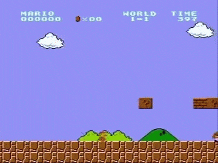 -
Pràctica en un Entorn Segur:
Els jugadors practiquen les habilitats i mecàniques en un entorn segur i sense amenaça.
Exemple: En molts jocs de tir, el tutorial pot situar al jugador en un camp d'entrenament on poden practicar la punteria sense enemics hostils.
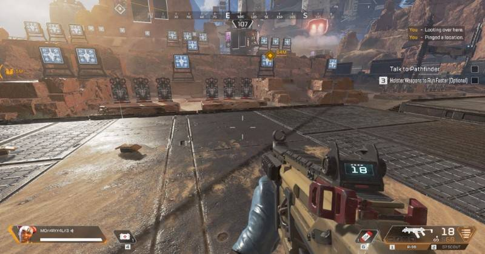 -
Narrativa Integrada:
La informació del tutorial es presenta dins del context de la història del joc.
Exemple: En "The Legend of Zelda: Breath of the Wild", el personatge principal rep instruccions mentre rep les seves armes al començament del joc.
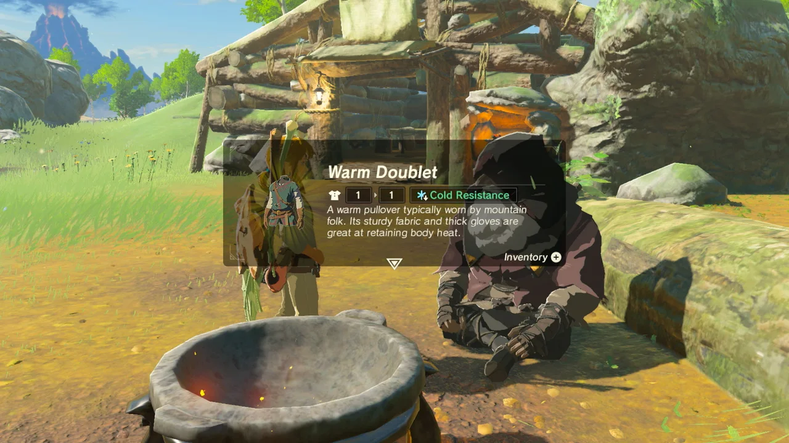 -
Nivells Especifics de Tutorial:
S'inclouen nivells dedicats exclusivament a ensenyar habilitats específiques o mecàniques.

-
Tutorial Interactiu:
Els jugadors aprenen mitjançant la pràctica directa i interacció amb elements del joc.
Exemple: En "The Elder Scrolls V: Skyrim", el tutorial permet als jugadors provar diferents habilitats mentre escapen d'una presó.
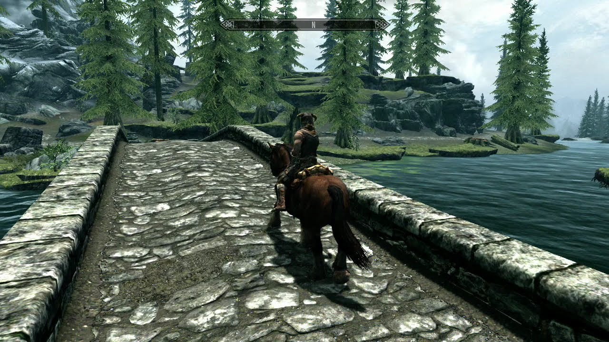 -
Personatge Acompanyat:
Un personatge dins del joc ofereix orientació i instruccions.
Exemple: En "Half-Life 2", el personatge Alex Vance acompanya el jugador i ofereix consells mentre introdueix les mecàniques del joc.
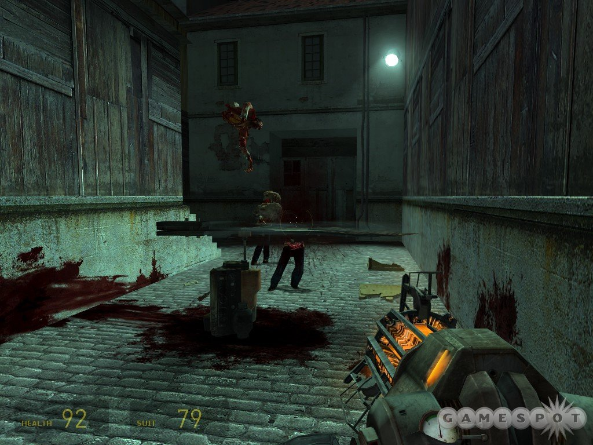 -
Missions Ambiguës:
Els jugadors reben missions que requereixen la utilització de diferents habilitats sense instruccions detallades.
Exemple: En "Journey", els jugadors han de descobrir les mecàniques del joc a mesura que avancen, sense explicacions directes.
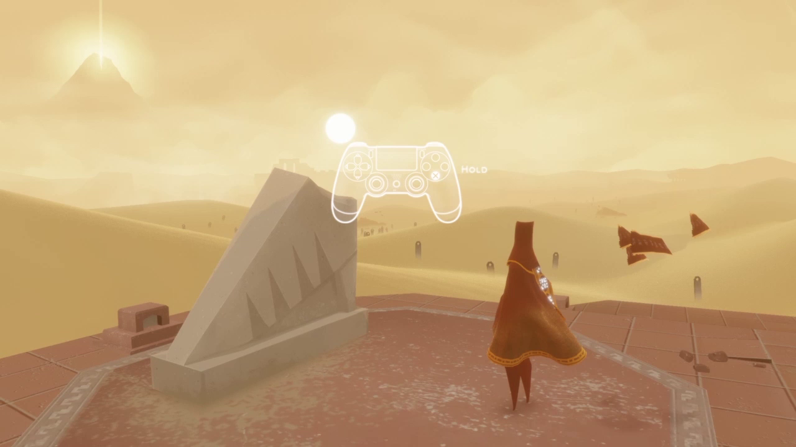 -
Desbloqueig Progressiu:
Les diferents habilitats i funcions es desbloquegen a mesura que el jugador avança en el joc.
Exemple: En molts jocs de rol, els jugadors adquireixen noves habilitats i característiques amb l'experiència.
Puzzles i Minijocs
Els puzzles i minijocs són elements populars en molts videojocs, ja que poden oferir diversitat a la jugabilitat i afegir capes d'entreteniment addicionals.
Exemples de Puzzles
Els puzzles en els videojocs són desafiaments de resolució de problemes que requereixen pensament crític i lògic per superar-los.
-
Varietats de Puzzles:
• Lògica: Resoldre seqüències lògiques o patrons.
• Mecànics: Interactuar amb objectes o elements amb habilitats específiques.
• Matemàtics: Resoldre equacions o problemes numèrics.
• Espacial: Entendre i manipular l'espai i la geometria.
• Temporal: Resoldre problemes basats en el temps.
-
Exemples de Videojocs amb Puzzles:
• Portal: Joc que es basa en la resolució de puzzles mitjançant l'ús de portals.
• The Witness: Ofereix una illa plena de puzzles amb diferents temàtiques.
• Tetris: Un dels jocs de puzles més clàssics, on els jugadors han d'organitzar peces caigudes.
Exemples de Minijocs
Els minijocs són petites activitats o desafiaments que es troben dins d'un videojoc més gran.
-
Finalitats dels Minijocs:
• Entreteniment: Proporcionar una pausa divertida o un canvi de ritme.
• Recompensa: Ofereixen recompenses com moneda de joc, objectes o millora de personatges.
• Narració: Contribueixen a la història o al món del joc.
-
Exemples de Videojocs amb Minijocs:
• Grand Theft Auto V: Inclou diversos minijocs com el golf, carreres de cotxes i altres activitats recreatives.
• The Legend of Zelda: Breath of the Wild: Conté diversos minijocs, com ara pescar, cuinar i proves de força.
• WarioWare series: És una sèrie de videojocs que consisteixen en minijocs ràpids i variats.
Iteració dels jocs
Les iteracions en el desenvolupament de videojocs es refereixen a la pràctica de revisar i millorar contínuament els elements del joc, ja sigui el disseny, la jugabilitat, els gràfics o altres aspectes. Aquest procés es realitza a través de cicles repetitius d'avaluació, retroalimentació i ajustament. Les iteracions són essencials per aconseguir un producte final de qualitat i per adaptar-se als canvis necessaris al llarg del desenvolupament.
Exemples d'Iteracions
-
Disseny de Nivells:
• Iteració inicial: Es crea un prototip inicial del nivell.
• Avaluació: Els desenvolupadors juguen el nivell per identificar àrees de millora.
• Iteració següent: S'ajusten els detalls del nivell segons la retroalimentació.
• Exemple: En el joc "Super Mario Maker", els jugadors poden iterar sobre els nivells que creen fins aconseguir el disseny desitjat.
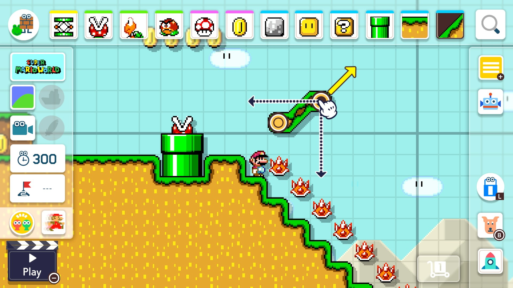 -
Jugabilitat:
• Iteració inicial: Es implementen mecàniques de joc.
• Avaluació: Jugadors de prova exploren i juguen el joc.
• Iteració següent: S'ajusten els valors de les mecàniques segons la resposta dels jugadors.
• Exemple: En "Overwatch", les iteracions continuen per equilibrar personatges i millorar la jugabilitat.
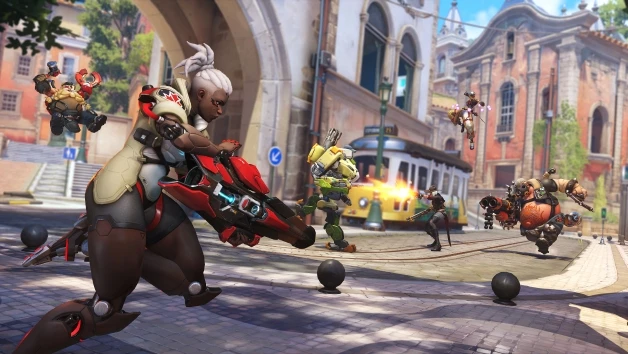 -
Gràfics i Estètica:
• Iteració inicial: Es crea una versió inicial dels elements visuals.
• Avaluació: Artistes i dissenyadors revisen els gràfics.
• Iteració següent: S'ajusten els colors, textures i altres elements visuals.
• Exemple: En "The Legend of Zelda: Breath of the Wild", l'iteració va ser clau per aconseguir l'estil artístic del joc.

-
Història i Narrativa:
• Iteració inicial: Es redacta una primera versió de la història.
• Avaluació: Equip de desenvolupament i escriptor revisen la coherència i l'emoció de la narrativa.
• Iteració següent: S'ajusten els diàlegs, es desenvolupen personatges i es milloren els punts de gir.
• Exemple: En la sèrie "Mass Effect", les decisions del jugador influeixen en la història, i les iteracions poden afectar aquests rams narratius.

-
Experiència de l'Usuari (UX):
• Iteració inicial: Es dissenya la interfície d'usuari.
• Avaluació: S'observa com interactuen els jugadors amb la interfície.
• Iteració següent: S'ajusten els elements d'interfície per millorar la facilitat d'ús.
• Exemple: En el desenvolupament de jocs mòbils, com "Angry Birds", les iteracions en la interfície poden optimitzar la jugabilitat en pantalles tàctils.
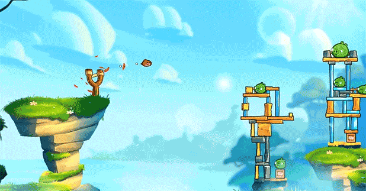